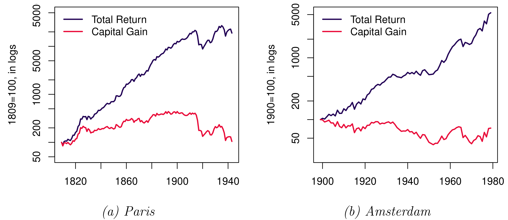

P15
Lecture 1: Introduction
Dr. Thies Lindenthal
htl24@cam.ac.uk
https://twitter.com/ThiesLindenthal
12.10.2022
## Putting things into perspective<span class='subtitle'><br>At the end of 2018, total UK real estate was worth ~£9.1trn</span> <style> #circleRE { width: 340px; height: 340px; -webkit-border-radius: 170px; -moz-border-radius: 170px; border-radius: 170px; background: blue; } #circleREinvestable { width: 64px; height: 64px; -webkit-border-radius: 32px; -moz-border-radius: 32px; border-radius: 32px; background: orange; } #circleFTSE { width: 148px; height: 148px; -webkit-border-radius: 74px; -moz-border-radius: 74px; border-radius: 74px; background: red; } </style> <div class='figure'> <div id="circleRE"></div> <div id="circleFTSE"></div> <div id="circleREinvestable"></div> </div> Notes: LSE total market cap.
<h2><span class="transparent70">Economy-wide risks</span><span class="subtitle transparent70"><br />Bank of England Financial Stability Report (<a href="https://www.bankofengland.co.uk/financial-stability-report/2019/december-2019">2019</a>)</span></h2> * <span class="transparent70">“<strong>The housing market can be a key source of risk to UK financial stability</strong>. In the UK, mortgages are households’ largest financial liability and lenders’ largest loan exposure in aggregate. Housing accounts for nearly half of the total assets of UK households. [...] Historically, the rapid build-up of household debt has been a key source of risk to financial and economic stability — and not just in the UK.”</span> <p class='source'><a href="https://www.flickr.com/photos/croydonclicker/51181061000">Photo ©</a></p> Notes: * The global financial crisis of 2008/2009 has highlighted the importance of real estate for our economy and financial system once more. * The sheer size of the asset class dominates national accounts and household-level balance sheets alike, both in terms of assets and liabilities. * A large section in the Bank of England’s 2019 Financial Stability Report is devoted to real estate, modelling how the housing market can be a key source of risk to UK financial stability.
<h2>Just an alternative?<span class="subtitle"><br />Real estate is a sizeable component of institutional portfolios</span></h2> * Sovereign wealth funds, insurance companies, pension funds - “Our” pension scheme USS holds £4.3 billion of private RE, for instance. <br>(Source: USS) Notes: * The risk/return profile of real estate is absolutely relevant to the industry. * Sovereign wealth funds, insurance companies, pensions funds and other institutional investors, they are all invested in real estate. * Our pension scheme, the USS, for instance, owns private property worth 4.3 billion at the moment. * Beside the shrinking pensions, real estate affects the bottom line of most households directly.
<h2><span class="darkonlight">Households</span><span class="darkonlight"></span><span class="darkonlight subtitle"><br />...face the same challenge as sophisticated professional investors</span></h2> <ul> <li><span class="darkonlight">3 BR late Victorian terraced house in East Cambridge. Sold in August 2019.</span></li> <li><span class="darkonlight">How much return can the new owners expect?</span></li> <li><span class="darkonlight">How much risk do they face?</span></li> </ul> Notes: * Estimating the risk and return of real estate remains a real challenge. It's a challenge because it's very difficult to do and it's real because it affects not only sophisticated big investors, but also normal households. * It's even more difficult at the asset-level. For example, this 3 bedroom late Victorian terraced house in East Cambridge was sold in 2019. If you think about this particular building, how much return can the owners expect over the coming years and how much risk do they face? * When we bought our house, my family assumed that I would conduct a very elaborate financial analysis. It's my job, I should be able to do it. Let me confess, I did not. I made a few bold assumptions and then we made an offer.
## Paper 15<span class="subtitle"><br/>What is the plan for 2022/23?</span> * The Aim: To apply core finance and investment market theories and models to the commercial and residential real estate markets. * Objectives - To strengthen understanding of the operation of real estate markets - To understand the linkage between real estate and financial markets - To be aware of current key issues in real estate finance - To understand the role of real estate in the investment portfolio - To improve and deepen quantitative analytic skills * Taught by the Department’s Real Estate Finance Group - Thies Lindenthal, Carolin Schmidt, Nick Mansley
## Paper 15<span class="subtitle"><br/>Taken the opportunity to refresh Paper 15</span> * Broad coverage of materials the same as in previous year... - Order and emphasis has changed somewhat - Worked to improve flow of ideas and concepts - Provided a better link from Paper Six (fingers crossed) - Assessment and teaching structure unchanged - We may produce a specimen paper given shifts in emphasis * Real Estate Finance with a Cambridge / Land Economy Twist - Many courses focuses largely on housing and exclusively on the US … - Strong emphasis on real estate as an investment / commercial real estate - Real estate debt, real estate equity in public and private markets - Real estate in global markets and key differences between them - An emphasis of understanding principles not just technical ability …
## Topics covered<span class="subtitle"><br/>Michaelmas</span> 1. Introduction: Real Estate as an Investment 2. Characteristics of Residential and Commercial Markets 3. Public versus Private Real Estate Markets 4. Private Real Estate Pricing: Valuation Principles 5. Measuring Private Real Estate Performance: Indices and Smoothing 6. Real Estate in the Mixed Asset Portfolio 7. Real Options – 1 8. Real Options and Land Value
## Topics covered<span class="subtitle"><br/>Lent</span> 1. Debt and Leverage: Principles 2. Loans: Residential and Commercial Loan Calculations 3. Loans: Structures, Underwriting, Covenants and Incentives 4. Debt as an Investment: Bonds, MBS and CDOs. 5. The Economic Drivers of Real Estate Risk and Return 6. Cycles: Value, Rent and Development Cycles 7. Real Estate Factor Risk 8. Measuring Fund Performance
## Resources<span class="subtitle"><br/>No spoon feeding</span> * Not slavishly following a text book - Be helpful to have access to one – Geltner et al., * Basic readings available on moodle - There’s an assumption you’ll have read these and more widely too. - Mix of academic articles and industry/professional materials - Augment with your own readings * Moodle Forum - Will post news items etc. on this and use it as forum for debate. The more you use it, the more valuable it will be … * Professional Practice Seminars - Organised by Nick Mansley. Targeted at MPhils, but P15 students very welcome and will benefit from attending.
## <span class="transparent70">Real Estate as an Investment</span><span class="subtitle transparent70"><br/>From cash flows to market values.</span>
## Four Quadrant Model<span class="subtitle"><br/>Fisher, DiPasquale and Wheaton (1992)—you have seen this in P4...</span> <div class='figure'> </div>
## Discounted Cashflows <span class="subtitle"><br/>Value is sum of future cashflows, discounted back to today.</span> `$$ V_0 = \sum^\infty_{t=1} \frac{CF_t}{(1+r_t)^t} $$` * Easy! You probably have done something like this before. * How should we model the cash flows? * Which discount rate(s) to use? * Real Estate pecularities?
-
## From Cash Flows to Values<span class="subtitle"><br/>Basic valuation for equities: Dividend discount model / Gordon growth model</span> * If we assume that CFs are an increasing perpetuity, - and <emph>g</emph> is the long-run average growth rate and <emph>r</emph> is the required return for equity holders, * then `$ \small V_0 = \sum^{\infty}_{t=1}D_t(1+r)^{-t} $`, * which simplifies to `$ \small V = \frac{D_1}{r-g}$`.
## Are Cash flows smoothly increasing?<span class="subtitle"><br/></span> * Bond-like characteristics - Lease contracts: defined rent and defined maturity? * Equity-like characteristics - Perpetuity: must either estimate exit value or use a perpetuity formula - Growth: income (and capital value) change over time * Capital expenditures tend to be irregular and large * Optionality
## Transaction costs <span class="subtitle"><br/>Large market frictions (at least for private real estate) </span> * Round trip transaction costs as high as 7–8% for commercial RE (Collet, Lizieri & Ward, 2003) * Incorporate direct transaction costs into cash flow predictions - Marketing and search costs - Legal and other professional fees - Property taxes/stamp duties * Indirect transaction costs - Cannot readily trade in and out of property. Liquidity risk. - Reflect in required rate of return for exit value
-
## Denominator `$ \small k$` <span class="subtitle"><br/>$ \small V = \frac{D_1}{k} = \frac{D_1}{r-g} \Longrightarrow k = \frac{D_1}{V}$</span> * The yield is observable (k = D<sub>1</sub>/P), but not constant in time (e.g., Amsterdam gross yields) * Decompose k into required return and growth and model individually - g might change over life of firm. Re-investment at same rate not always possible (typically declining returns)
## Normative view on $k$<span class="subtitle"><br/>What might be the correct discount rate?</span> * Discount rate reflects - time value of money—reward for giving up capital, - and compensation for risk. * Fisher model of interest rates - Interest (r) = Impatience + Anticipated Inflation + Risk - r = Risk Free Rate (RFR) + Risk Premium (RP) - RFR: From govenment debt? - RP depends on the variability of economic and financial drivers and "price of risk" * Real assets: depreciation? - Account for depreciation in CF or r? Both possible.
## What is (or should be) R?<span class="subtitle"><br/>Decomposing yield <emph>(k)</emph> to back out required return <emph>(r)</emph>.</span> <table style="font-size: 0.6em;"> <tr><td></td><td></td></tr> <tr><td>k = r – g </td><td> r is required return, g = growth <br>(k is directly observable, R and g not!)</td></tr> <tr><td>r = RFR + RP </td><td> Risk Free Rate + Risk Premium </td></tr> <tr><td>RFR = RFR<sub>r</sub> + E(f) </td><td> real RFR, expected inflation </td></tr> <tr><td>g = g<sub>r</sub> + E(f) </td><td> real Growth, expected inflation </td></tr> <tr><td>k = RFR<sub>r</sub> + E(f) + RP – g<sub>r</sub> – E(f) </td><td></td></tr> <tr><td>k = RFR<sub>r</sub> + RP - g<sub>r</sub> </td><td> and inflation cancels out</td></tr> <tr><td>k = RFR<sub>r</sub> + RP – g<sub>r</sub> + d </td><td> depreciation of structures</td></tr> <tr><td></td><td></td></tr> </table> * If we have realistic estimates for some but not all parameters, we can back out the market consensus for anything missing.
## Risk-free rate<span class="subtitle"><br/>Yields on 10-year US Treasury bonds, nominal and real.</span> <div class="figure"> <iframe src="https://fred.stlouisfed.org/graph/graph-landing.php?g=wTMj&width=670&height=475" scrolling="no" frameborder="0"style="overflow:hidden; width:670px; height:525px;" allowTransparency="true" loading="lazy"></iframe> </div>
## A bit longer?<span class="subtitle"><br/>What is a meaningful references period?</span> <div class='figure'> <p class='title'>UK and Dutch government bond yields</p> <img src="imgs/UK_NL_yields.png" height=450> <p class="source">Source: Ambrose, Eichholtz, Lindenthal (2013); Eichholtz & Koedijk (1996); Barclays</p> </div>
## Risk Premia<span class="subtitle"><br/>Equity RP are diverse in space and dynamic in time.</span> <div class='figure'> <p class='title'>Estimated Equity Risk Premia<p> <p><img src="imgs/RP.png" height=380></p> <p class="source">Source: <a href='https://press.princeton.edu/books/hardcover/9780691091945/triumph-of-the-optimists'>Dimson, E., P. Marsh & M. Staunton (2002)</a></p> </div> * If anything, real estate RP will be even more localised and volatile.
## Growth estimates<span class="subtitle"><br/>How high have historical growth rates really been?</span> <div class='figure'> <p class='title'>RRE returns (nominal), City of London</p> <img src="shared-figures/longterm-returns/london/cre-london-nominal.svg" height=400> </div> Notes:
## Growth estimates<span class="subtitle"><br/>In real terms, all growth came from income. Negative capital gains!</span> <div class='figure'> <p class='title'>CRE returns (real), City of London</p> <img src="shared-figures/longterm-returns/london/cre-london-real.svg" height=400> </div> Notes:
## Manhattan<span class="subtitle"><br/>120 years without an upward trend in commercial real estate prices?</span> <div class='figure'> <p class='title'>CRE Price Index (real), New York (1899–2022)</p> <p><img src="shared-figures/longterm-returns/us/cre-manhattan.svg" height=400></p> <p class="source">Sources: <a href="https://onlinelibrary.wiley.com/doi/abs/10.1111/j.1540-6229.2009.00235.x">Wheaton, Baranski & Templeton (2009)</a>; MSCI/IPD; NCREIF</p> </div>
## Growth US house prices?<span class="subtitle"><br/>100 years of flat house prices. Booms are relatively recent.</span> <div class='figure'> <p class='title'>US house price index (real), 1890–2022</p> <img src="shared-figures/longterm-returns/us/case-shiller-hpi.svg" height=400> <p class=source>Data: <a href='http://www.econ.yale.edu/~shiller/data.htm'>Robert Shiller</a></p> </div>
## Norway?<span class="subtitle"><br/>In the long run... real prices are flat!</span> * Norwegian real house prices, 1819-2003 (Eitrheim & Erlandsen, 2003)
## Beijing?<span class="subtitle"><br/>No price gains</span> * House prices, Beijing. 1644–1840 (<a href="https://www.sciencedirect.com/science/article/abs/pii/S0014498313000132">Raff, Wachter & Yan, 2013</a>)
## Netherlands?<span class="subtitle"><br/>In the very long run... real prices are flat!</span> <div class="figure"> <p class="title">Amsterdam Property Prices, 1650–2005</p> <p></p> <p class="source">Source: Eichholtz (1997)</p> </div>
## Prime location<span class="subtitle"><br/>In 1672—and today.</span> <p class="source">Gerrit Adriaenszoon Berckheyde: Herengracht, Amsterdam, 1672</a> <p> </p> <p> </p> <p> </p> <p> </p> <p> </p> <p> </p>
<h2>Half a millennium of rental growth <span class="subtitle"><br />500 years of Western European economic history</span></h2> * Rent indices (nominal) for 7 cities <img src="imgs/index_nominal.jpg" height=450><br>Source: Eichholtz, Korevaar, Lindenthal (working paper) Notes: * and here the are: Rent indices for 7 cities covering more than 500 years. * Such a long time series on urban housing markets might be a world record. I am not sure.
<h2> Real Rents<span class="subtitle"><br />Inflation is a relatively modern phenomenon</span></h2> * Rents deflated with a general consumer price index Notes: * This is the same indices, but deflated with a general consumer price index. * It turns out that real rent indices are great sensors of the cities' economies, they track the ups and downs of our cities very closely.
<h2>Rents are a sensor<span class="subtitle"><br />... of a city's fortune</span></h2> * Disasters: Sack of Antwerp ("Spanish Fury"), 1576 Notes: * Let's start with a drastic example. * It is reassuring to see that a massive disasters like the sack of Antwerp in 1576 are clearly identifiable in our indices.
<h2>War & regulation<span class="subtitle"><br />Another disaster: Siege of Paris, 1590 </span></h2> * First example of rent control in our sample. Notes: * I won't go through 500 years of European history, but let me give one more example: Rents collapsed during the siege of Paris in 1590. This was, of course, directly caused by Henry the fourth bombarding the city from the outside. * But in addition, rents were cut during the first instance of rent regulation that we observe in our sample. This rent regulation regime was short-lived and we basically observe free markets up to WWI. * Having several centuries unregulated rent data is unique and can really help to come up with counterfactuals for more regulated housing markets.
<h2>Shared trends<span class="subtitle"><br />Centuries of stability, followed by fundamental change</span></h2> * Rents doubled during the industrial revolution Notes:
<h2> Long-term rents: growth<span class="subtitle"><br />Annual growth, 500-year average: 0.12–0.30%.</span></h2> * Modest growth ($\mu$), despite rapid urbanisation<br> Notes:
<h2> Long-term rents: risk<span class="subtitle"><br />Modest growth ($\mu$), substantial risk ($\sigma$)</span></h2> * $\sigma$ of 8–13% (total returns are roughly 4–5%)<br><img src='imgs/T2_2.png' height="350"> Notes:
<h2> Superstar bias?<span class="subtitle"><br />In 1500, the Belgian cities were the stars. Not London or Paris.</span></h2> * Don't focus on the successful survivors, only <br> Notes:
## Depreciation<span class="subtitle"><br/>More than just a constant factor.</span> <div class="figure"> <p class="title">Depreciation in US Commercial & Multi-Family Properties</p> <p></p> <p class='source'>Source: Bokhari & Geltner (2016)</p> </div>
## k — not constant!<span class="subtitle"><br/>Rent-price ratio (gross yield) for Amsterdam, 1650-2007</span>
## All in expectations!<span class="subtitle"><br/>Observed k depends on expectations of growth, RFR<sub>r</sub>, RP.</span> * Dynamic Gordon growth model - Prices are the discounted sum of rents, - growth rate of rents and required return to housing can vary over time * Three components of rent price ratio (in logs: `$\small l_t -p_t$`), all in expectations - Interest rate (`$\small i$`) - Risk premia (`$\small \pi$`) - Changes in rents (`$\Delta l$`) <img src="imgs/bubbleformula.png"> * see e.g. Campbell et al. (2009), or Ambrose et al. (2013)
## Idiosyncratic Risk<span class="subtitle"><br/>Should idiosyncratic risk be reflected in the discount rate?</span> * Idiosyncratic risk is big for RE investments (<a href="https://academic.oup.com/rfs/advance-article/doi/10.1093/rfs/hhab042/6222230">Eichholtz et al., RFS 2021</a>) <img src="imgs/idiosyncratic_risk.png" height=250> * Textbooks: Only systematic risk in discount rate! * <a href="https://www.paulhdecaire.com/uploads/1/2/7/1/127144669/decairepaul_capitalbudgetingandidiosyncraticrisk_20200109_2.pdf">Décaire (2020)</a>: "on average, firms inflate their discount rate by 5 percentage points in response to an 18pp increase in idiosyncratic risk."
<h2>Is real estate a good investment?<span class="subtitle"><br />We should know: It’s the world’s largest asset class.</span></h2> * How much investment risk and return can we expect? * How does its risk/return profile compare to other investments? * How much more risky are individual assets? Notes: * Most of my research centers around a straight-forward question: Is real estate a good investment? We should know, it's the largest asset class in the world. * Still, property investments are often misunderstood as being fundamentally different from more mainstream asset classes such as stocks or bonds. Simplistic advice such as "get on the housing ladder!" is typical for a view in which real estate is exceptional: returns exceed a fair compensation for risk. * As an applied financial economist, I strive for a realistic estimates of real estate’s risks and returns, both at the market and at the asset level. To do so, I combine theory and data, traditional econometrics and innovative machine learning techniques, dusty archives and big data sensors. * To come back to the main question: Academics, industry players, policymakers and private households— they should be familiar with real estate’s risk–return profile to make better decisions.
## Academia to the rescue?<span class="subtitle"><br>Broad literature, surprisingly few answers. Data are scarce.</span> * **A risk premium puzzle?** - “Arguably the most surprising result of our study is that long-run returns on housing and equity look remarkably similar. <mark>Yet while returns are comparable, residential real estate is less volatile on a national level, opening up new and interesting risk premium puzzles.</mark>” <br /><br/>*The Rate of Return on Everything, 1870–2015* (<a href="https://academic.oup.com/qje/article/134/3/1225/5435538">Jordà et al., QJE 2019</a>) Notes: * And I am not the only one struggling to come up with helpful answers. * As a discipline, we lack good quality data. * Without reliable data, the academic literature remains stuck in "puzzles". A good example is a recently published QJE paper that compared the risk-return profiles of housing to stocks. * They, again, repeat this widely-held misconception that real estate is somehow magical: Ig offers the same returns as stocks but at a lower risk. * That cannot be true—and it isn't.
## Better data!<span class="subtitle"><br/>“The Total Return and Risk to Residential Real Estate” <br/>(<a href="https://academic.oup.com/rfs/advance-article/doi/10.1093/rfs/hhab042/6222230">Eichholtz, Korevaar, Lindenthal, Tallec, RFS 2021</a>)</span> * Asset-level total return: Rents, costs, taxes, prices for residential RE in Paris (1809–1943) and Amsterdam (1900–1979)  Notes: * In a recent paper, Piet Eichholtz, Matthijs Korevaar, Ronan Tallec and I show that this puzzle completely disappears with better data. * We collected 170K rent and price observations for Paris and Amsterdam and were able to calculate total returns at the property level. This is the first study that offers asset-level total return data for more than just a few years. * Two things stand out from this paper: First, risk is a lot higher than previously thought. That means that the risk-adjusted returns of real estate are no positive outliers but comparable to stock returns. * Second, almost all of the return comes from rents. Rents are really making or breaking property returns in the long run.
<h2><span class="transparent70">Reliable Micro-Data</span> <span class="subtitle transparent70"><br />Ledgers records of institutional investors</span></h2> * <span class="transparent70">Amsterdam, Antwerp, Bruges, Brussels, Ghent, London, and Paris</span>
## "Normal" Sharpe Ratios<span class="subtitle"><br/>Asset-level total returns (<a href="https://papers.ssrn.com/sol3/papers.cfm?abstract_id=3549278">Eichholtz, Korevaar, Lindenthal, Tallec</a>)</span> * Paris (1809–1943) and Amsterdam (1900–1979)<br>
## Summary<span class="subtitle"><br/>Asset valuation </span> * Decompose yields: Forecast individual components (RFR, RP, g, δ) to arrive at discount rate. * g is probably smaller than your first guess... * RP is difficult to estimate. And volatile. * δ needs more attention – not just an afterthought. * Justify your assumptions, always. Sensitivity analysis?
## Discussion<span class="subtitle"><br/>If there is time...<span> 1. Buy land, they don't make it anymore.
## Real Estate Seminars<span class="subtitle"><br/>The newest research! Open to all.</span> * Cambridge Real Estate Seminars - https://seminar.re * American Real Estate and Urban Economics Association (AREUEA) Virtual Seminars - https://www.areuea.org/virtual-seminar-series
<h2>Q & A<span class="subtitle"><br />Surely, there are questions?</span></h2> <p> </p> <p> </p> <p> </p> <p> </p> <p><span class='source'><a href="https://www.flickr.com/photos/vic_206/37365289430">Photo ©</a></span></p> Notes: